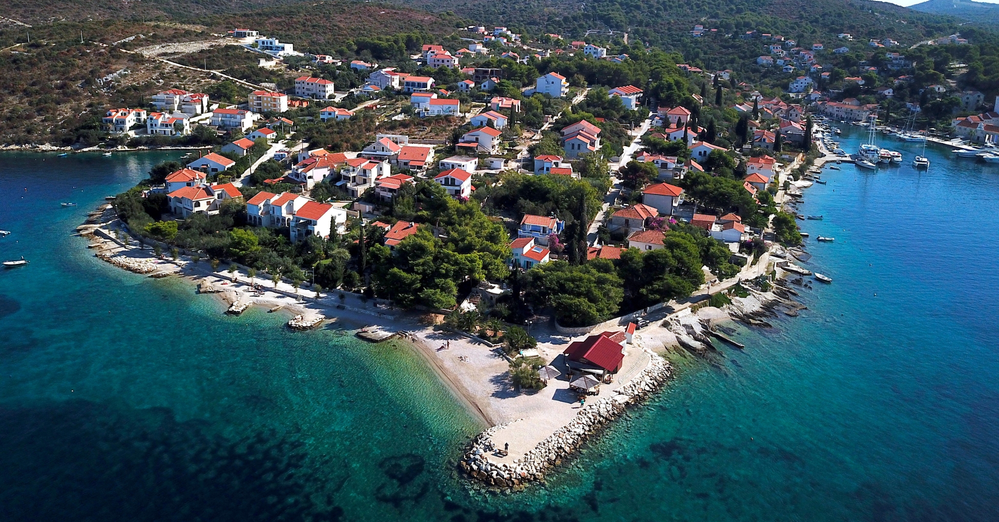

Ovo idilično ostrvo karakteriše netaknuta priroda, kristalno čisto more, pitomi pejzaži i tradicionalna mediteranska atmosfera koja oduzima dah.
Šolta nudi raznolike atrakcije i znamenitosti koje će zadovoljiti ukuse svih posetilaca.
Za ljubitelje prirode, ostrvo nudi obilje staza za šetnje i planinarenje koje vode kroz bujne šume, maslinjake i vinograde.
Posetioci takođe mogu istražiti slikovita sela i obalu ostrva, upoznati se sa bogatom istorijom i tradicijom ovog kraja, kao i uživati u autentičnoj gastronomiji.
Možete posetiti brojne manje uvale i plaže koje pružaju mir i tišinu, idealne za opuštanje i uživanje u sunčanju i kupanju.
Za one koji vole aktivni odmor, Šolta nudi različite mogućnosti za sportske aktivnosti poput ronjenja, jedrenja, vožnje biciklom i ribolova.
Takođe, posetioci mogu istražiti brojne arheološke lokalitete, crkve, palate i muzeje koji svedoče o bogatoj istoriji ostrva.
Uz to, Šolta je poznata po svojoj tradicionalnoj proizvodnji maslinovog ulja i vina, pa se posetiocima pruža prilika da degustiraju lokalne specijalitete i upoznaju se sa lokalnom kulturom i načinom života.

Posetite najlepše plaže ostrva:
1. Plaža Šešula
Ova divlja plaža nalazi se na jugoistočnoj obali ostrva i karakteriše je kristalno čisto more i okolne stene obrasle borovima.
Pristup plaži je moguć samo peške ili brodom, što je čini mirnom i netaknutom.
2. Plaža Maslinica
Smeštena u istoimenom mestu na zapadnoj obali, plaža Maslinica je popularna zbog svoje šljunkovite obale i plitkog, tirkiznog mora.
Uz predivan pogled na marinu, ova plaža je idealna za porodične izlete i opuštanje.
3. Plaža Livka
Ova skrivena uvala nalazi se na južnoj obali ostrva i pruža intimnu atmosferu sa svojom šljunkovitim obalom i tirkiznim morem.
Plaža Livka je idealna za one koji traže mir i tišinu daleko od gužve.
4. Plaža Nečujam
Najveća plaža na ostrvu, Nečujam, nalazi se na istočnoj obali i karakteriše je široka peščana obala i plitko more, čineći je savršenom destinacijom za porodice sa decom.
Ova plaža takođe nudi razne vodene aktivnosti poput ronjenja i vožnje čamcem.
5. Plaža Zaglav
Smeštena na jugoistočnoj obali, plaža Zaglav je poznata po svojoj kristalno čistoj vodi i prirodnoj lepoti.
Okružena borovima i stenama, ova plaža je idealna za one koji traže mir i netaknutu prirodu.
Gde jesti na Šolti:
1. Konoba Kopačina
Ovaj restoran nudi autentičnu dalmatinsku kuhinju, sa jelima pripremljenim od lokalnih sastojaka, kao što su sveže ribe, morski plodovi, jagnjetina i maslinovo ulje.
2. Konoba Pasarela
Smeštena u slikovitom mestu Maslinica, ova konoba nudi prelepe poglede na more i marinu, uz ukusna jela od sveže ulovljene ribe i morskih plodova.
3. Restoran Škoj
Ovaj restoran se nalazi u starom delu grada Stomorska i specijalizovan je za tradicionalna dalmatinska jela, kao i specijalitete od mesa i domaće testenine.
4. Restoran Maslin
Smješten pored mora u mestu Rogač, ovaj restoran nudi predivnu atmosferu i jelovnik inspirisan lokalnom kuhinjom, sa naglaskom na sveže pripremljene riblje specijalitete i plodove mora.
5. Konoba Špica
Ova konoba se nalazi u malom ribarskom mestu Nečujam i poznata je po svojim tradicionalnim dalmatinskim jelima, kao što su riblje čorbe, pečena riba i domaći prilozi.
Najbolji barovi na Šolti:
1. Caffe Bar Grmas
Smešten uz obalu u mestu Maslinica, ovaj kafić nudi prelepe poglede na more i marinu, uz širok izbor pića i opuštenu atmosferu.
2. Caffe Bar Porat
Smešten uz obalu u mestu Maslinica, ovaj kafić nudi prelepe poglede na more i marinu, uz širok izbor pića i opuštenu atmosferu.
3. Beach Bar Mul
Smešten na plaži u mestu Nečujam, ovaj bar je savršeno mesto za opuštanje tokom dana i uživanje u osvežavajućim pićima dok gledate zalazak sunca.
4. Bar Plaža Livka
Ovaj bar se nalazi na istoimenoj plaži Livka i nudi opuštenu atmosferu uz muziku i koktele, savršeno za večernje druženje sa prijateljima.
Maslinica
Grad Maslinica, smešten na zapadnoj obali ostrva Šolta, poznat je po svojoj autentičnoj mediteranskoj atmosferi, prelepim pejzažima i luksuznim marinama.
Ovo slikovito ribarsko mesto privlači turiste svojim šarmom, tradicionalnom arhitekturom i bogatom istorijom.
Jedna od glavnih atrakcija u Maslinici je njegova prelepa luka, koja je okružena tradicionalnim kamenim kućama i borovom šumom.
Ova luka je omiljena među nautičarima zbog svoje zaštićene pozicije i kristalno čistog mora.
Turisti mogu istražiti brojne marine, gde se mogu diviti luksuznim jahtama ili uživati u lokalnoj ribarskoj kuhinji u obližnjim restoranima.
Pored marine, Maslinica nudi i brojne druge atrakcije, uključujući prelepe plaže, pešačke staze kroz netaknutu prirodu, kao i fascinantne istorijske znamenitosti.
Posetioci mogu istražiti dvorac Martinis-Marchi, koji datira iz 18. veka i pruža fantastičan pogled na okolna ostrva i more.
Način života u Maslinici je spor i opušten, sa naglaskom na tradicionalnim vrednostima i gostoprimstvu.
Posetioci mogu uživati u šetnjama duž obale, istraživati uske ulice i trgove, ili jednostavno sedeti u lokalnim kafićima i uživati u jedinstvenoj atmosferi mesta.